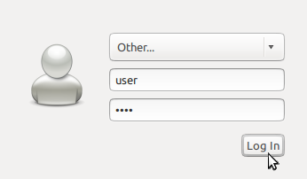

Guía rápida de Internacionalización de OSGeo-Live¶
Cambio de idioma¶
Hemos instalado muchos idiomas comunes. Para cambiar el sistema necesitarás hacer los siguiente:

- Salir (Log out).
- En la ventana de selección de usuario, selecciona un usuario.
- En el panel inferior ahora verás un menú para seleccionar un idioma diferente.
- Selecciona otro idioma e introduce el password, y continúa después el proceso de acceso(login) habitual.
- Repite el proceso cuando quieras volver a cambiar el idioma.
{kind=link}
The system A partir de ahora, los menús de sistema y muchas de las aplicaciones aparecerán en el idioma elegido. Si un programa específico continúa en Inglés, es que todavía no esta disponible la correspondiente traducción, por favor, en ese caso, considera ofrecerte voluntario para traducirlo. Contacta el programa de interés directamente para más información.
Para idiomas adicionales ver: (Requiere conexión a Internet).
Soporte de teclado¶
El soporte de teclado internacional está instalado, pero necesitarás configurar el sistema para tu teclado específico.
Para cambiar la configuración abrir desde el menú principal y hacer clic en la pestaña Método de entrada. Luego clic en Personalizar methods de entrada activos y en el botón Seleccione un método de entrada button. Clic en el botón Añadir de la derecha para añadir un método adicionay y Cerrar la ventana de Preferencias de IBus.
Ahora se puede hacer clic en el icono del teclado en la barra de menú inferior para seleccionar el método de teclado activo.